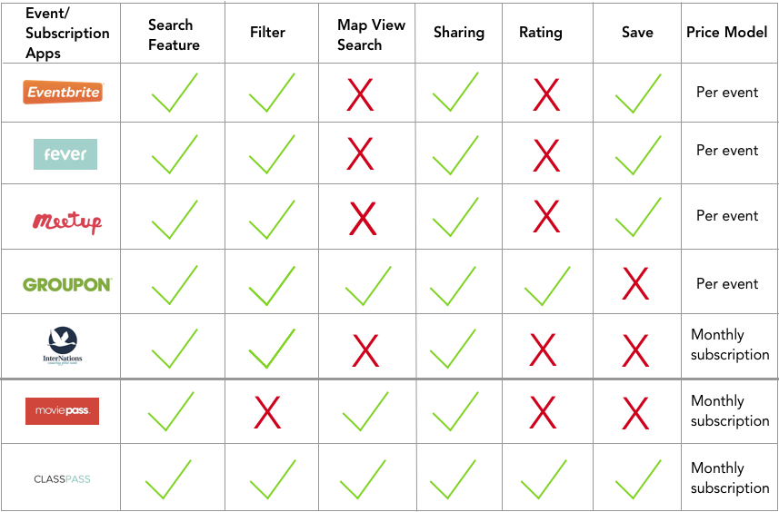
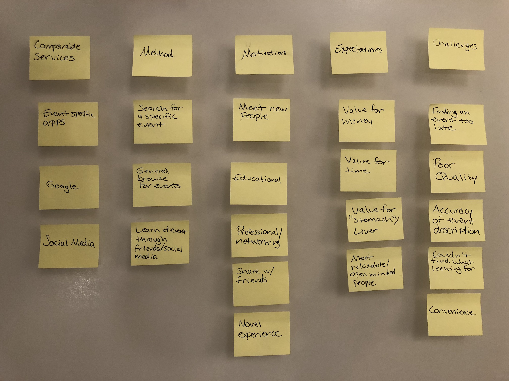
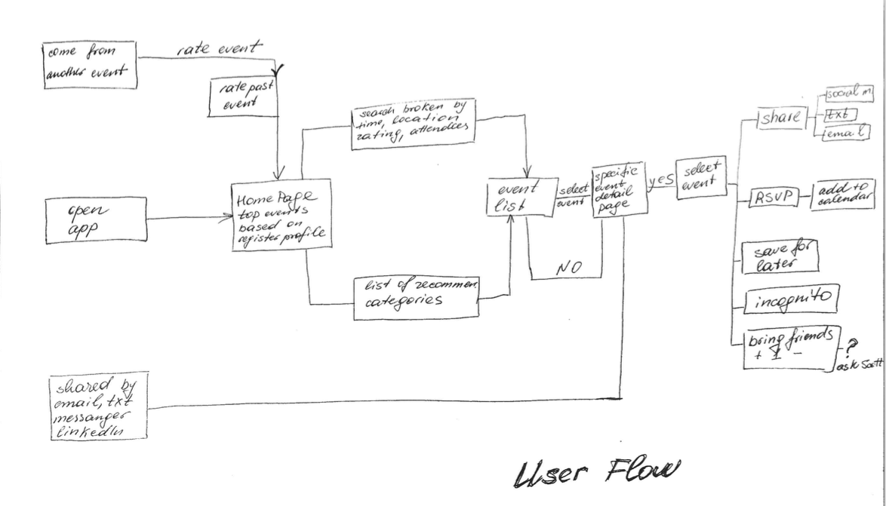
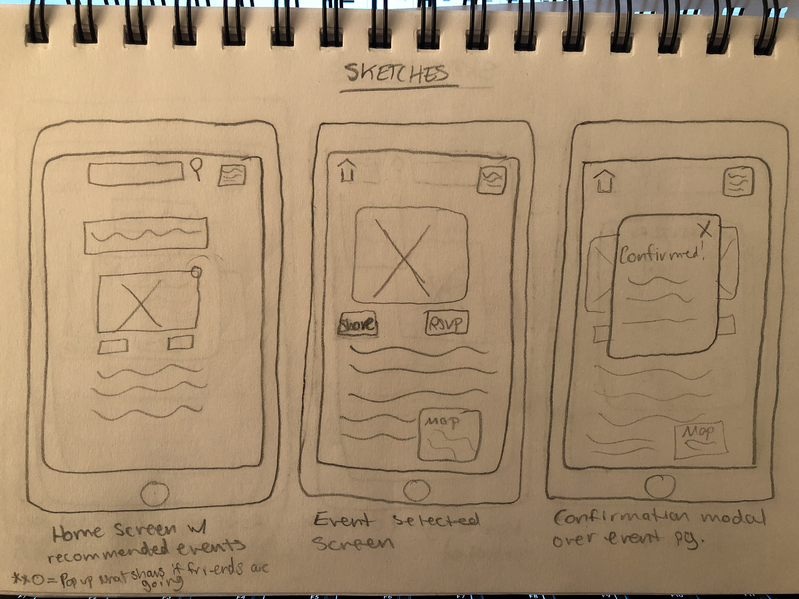
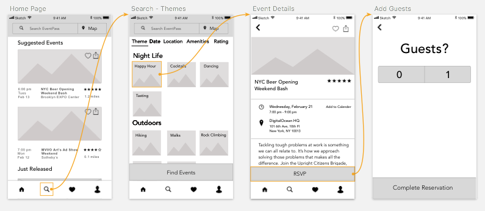
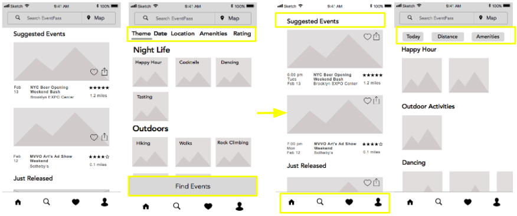
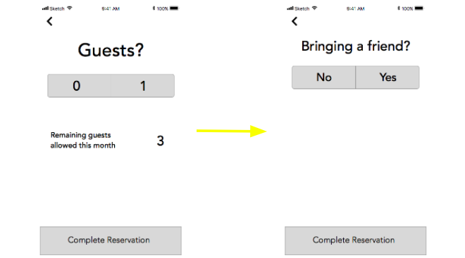
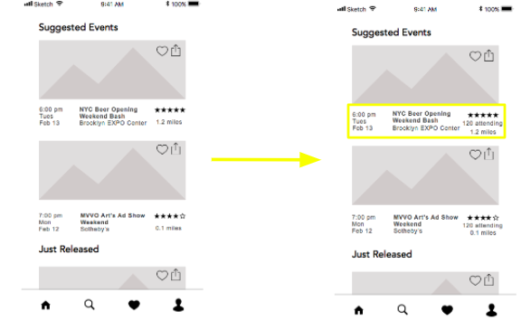
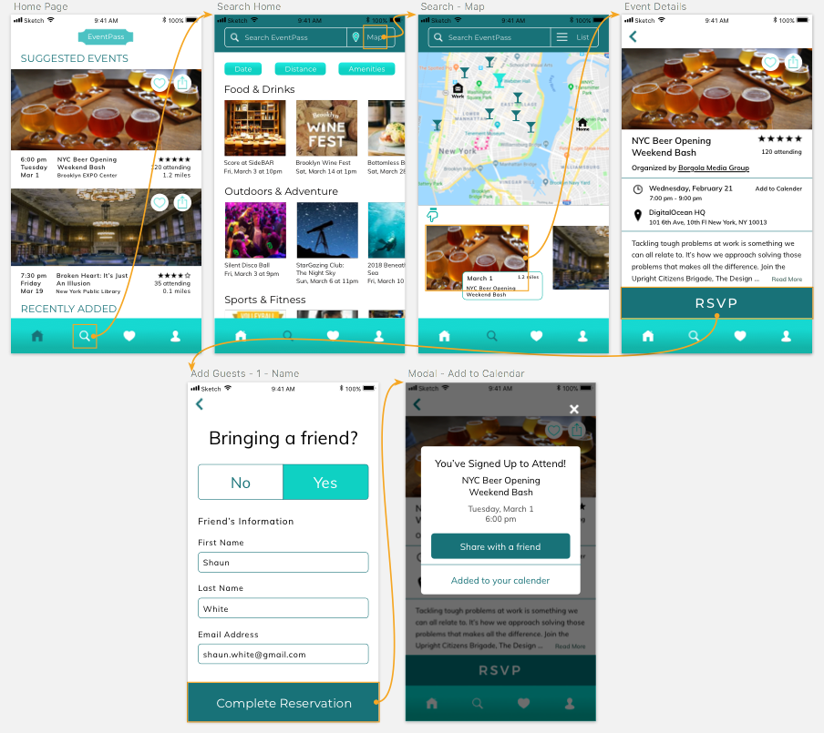
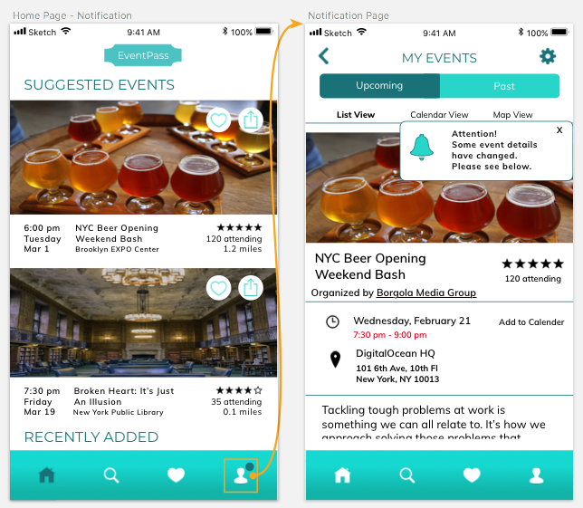

Hi, I'm Bernadette and I'm a User Experience Designer in New York City. Below you'll learn a little about me and my projects.
About Me
My Background
I'm passionate about bringing ideas to life through intuitive, clean design. In my process I embrace the Golden Rule to create organic and engaging experiences by exploring what users value and how they think.
Through my experience with Thinkful's Fullstack immersion, I felt compelled by UX research and design, and dove into it further by completing the Beginex mentorship program. I am thrilled to be part of a community that delivers simplicity through compassion and insight.
Skills
- Sketch
- InVision
- Responsive Design
- JavaScript: jQuery, React, Node.JS
- HTML
- CSS
UX Projects
-
EventPass
EventPass is an upcoming subscription event application. The goal of my team was to create an intuitive and efficient experience for existing attendee users to research, browse, select and register for events.
-
MoxieReader
MoxieReader is an educational platform that encourages children to read by tracking their progress. It is designed for students, teachers, and parents. We are currently refining several features.
Additional Projects
-
Collaboration Space
This purpose of this app is to provide New York musicians a platform to search for people to collaborate with; users create a profile and may search by borough and musician type (i.e vocalist, instrumentalist, and composer). It was built with Node.js, React, Redux, HTML, and CSS.
-
New York Times Search
This app allows users to input a start and end date (between September 18th, 1851 until present) and receive a link, snippet, and lead of New York Times articles from that chosen period. Its main purpose is to serve as a browsing tool to stumble upon what issues made the news in a particular era. It was built using the New York Times REST API, React, Redux, HTML, and CSS.
-
Critic Buddies
Critic Buddies allows users to post movie reviews for their friends to read, as well as read the reviews their friends write. It was built with Node.js to write the API, and jQuery, CSS, and HTML were used for the frontend.
-
Mars Rover Photo Search
This app enables users to search for images of Mars taken by one of the Mars rovers. A search can be narrowed by selecting one of three rovers, a particular camera available for the selected rover, and by entering a sol number. It was built with the NASA API, HTML, CSS, and Javascript.
Portfolio
EventPass: An upcoming mobile application that gets people exploring their city by providing a more affordable way to find and attend events. For one small monthly subscription fee, they provide free access for all kinds of events/activities/services in New York City.
Goal: Create an intuitive and efficient experience for existing attendee users to research, browse, select and register for events.
Timeline: 8 weeks
Role: As a team of 4, we rotated as project manager, and individually contributed to UX research and UX/UI design.
Project Background: This project was completed as part of Beginex, a User Experience program that partners with social impact clients.
Research and Ideation
Competitive Analysis
We conducted competitive analysis to better understand the landscape of other directly related event apps and two indirect subscriptions apps to learn what features they offer in the search/registration process. We found openings in two areas where EventPass could stand out - map view browse and event ratings.

User Interviews
Before beginning our user interviews, we developed our questions based on four main questions we needed to know:
- Why do people attend events?
- What kind of events are users looking for?
- What is the process for event searching?
- What is the competitive landscape with regards to other event-finding resources?
Affinity Mapping
To synthesize our data we arranged post-its to find common themes.
Key Takeaways:
Timing
- A common frustration is to find out about an event after it’s filled
Quality
- Venue, organization, perks, people (both who and how many)
Social
- Curiosity about event size and who the other people attending are

With these themes in mind, we sat down with the client to prioritize our next steps. Given that quality came up a lot in our interviews, we wanted users to be able to gauge it through star ratings that past attendees gave the organizers, as well as the option to filter by perks, such as free food. While we wanted to incorporate synchronization with social media platforms into the design, the client decided it was not necessary for the MVP.
Testing and Iterations
User Flow
We created our own user flows and then combined our ideas to create one that included all possible routes for the user to take and chose a happy path to use for tests.

Low-fi Wireframes
We made dozens of sketches separately and combined our best features for each screen that we would use for our medium fidelity prototype.

Medium Fidelity Prototype
We tested our prototype in two phases with the same main path. All users were asked to find an event by searching or filtering, RSVP for the event, add a friend, and share the event.

After our initial tests, we organized our data by issue, severity, and potential solutions in a spreadsheet.
Key Takeaways:
- Users tended to click the magnifying glass in the nav to search without noticing the search bar at the top. They also expected filtered selections to filter automatically without pressing the Find Events Button. To solve these issues, we kept all search/filter functionality together, added dropdowns to the category options, and removed the Find Events Button.

- Users were unclear if bringing a guest meant only their friend or included both themselves and their friend, so we simplified the language to “Bringing a Friend?”

- Users asked questions such as “Can I see who else is going?”, “Can I know if my friends are going?”, and “How many people are going?”, which reflected the importance of social curiosity we learned about in our interviews. Because the client asked us not to delve too deeply in terms of design on this issue, we offered a small update by including the number of attendees as a way to move a bit closer to the user’s wants.

Final Results
Before creating our high fidelity prototype, we made style tile options for our client, who preferred to keep the look light and fun. The architecture of our prototype remained the same after phase two of our testing, but we spoke with the client to discuss any aspects that were missing. For this prototype, he asked us to include screens representing event change notifications, and to save our other ideas for “next steps” to use later.


Next Steps
We gathered ideas that we could not use in the initial phase, but are important to note because they include both what users are interested in, as well as what the client wishes to eventually incorporate.
Point system for attendees
- Leads to rewards for users
- Based on attendees’ behaviors
Broadening social capabilities
- Sync to other platforms including Facebook, LinkedIn, Twitter
- RSVP version (Incognito mode)
Appeal to visual users by expanding map view functionality
- Include filter options and icons in map search view
Following our final presentation, our client’s feedback was positive and he was excited to begin working with his development team on implementing our designs. Our team was pleased to work on this challenge for EventPass the last two months and we look forward to tracking its continuing progress.
View Our Prototype